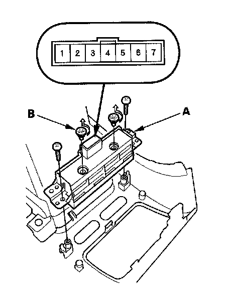
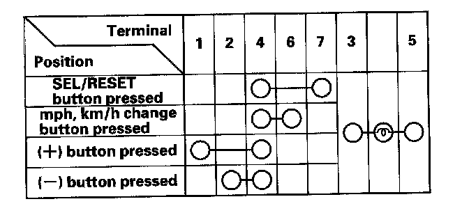

Dimmer Switch: Service and Repair
Dash Lights Brightness Controller and Odometer Select/Reset Button Test/Replacement1. Remove the subdisplay visor and disconnect the connectors.

2. Remove the two screws and the dash lights brightness controller-odometer select/reset button (A).

3. Check for continuity between the terminals in each switch position according the table.
4. If the continuity is not as specified, replace the bulbs (B) or the dash lights brightness controller odometer select/reset button.